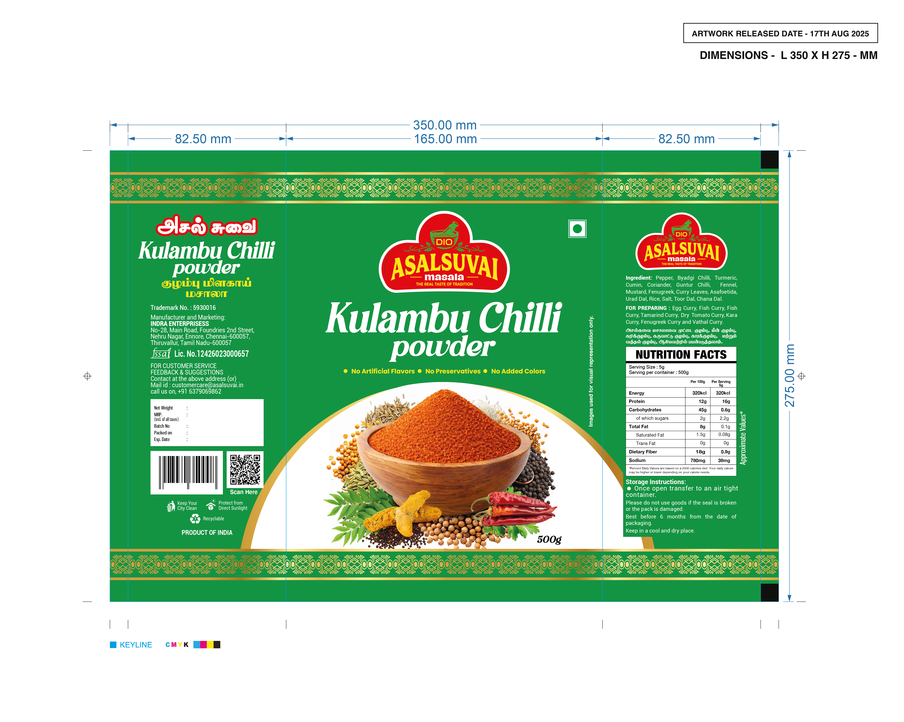

Natural ingredients with no artificial colours, flavours or preservatives.
Traditional Spices
Premium South Indian powders for every kitchen.
Freshly ground turmeric, chilli, coriander, and Kolambu blends made in small batches for bold flavour and trusted quality.
Small Batch Freshness
Ground daily from farm-fresh spice ingredients.
Authentic Taste
Trusted family recipes with every pack.
Pure Ingredients
No artificial colours, flavours, or preservatives.

Small-batch spice blends made from traditional South Indian recipes.
Freshly packed and shipped quickly so you can cook with confidence.
Signature Masala Collection
Explore our bestselling spice powders crafted to add vibrance, aroma and depth to your everyday cooking.

Turmeric Powder
Bright turmeric with earthy warmth for curries, dals and healthy beverages.

Red Chilli Powder
Freshly ground chilli with vibrant colour and a robust spicy kick.

Coriander Powder
Mild, citrusy coriander that balances curries, gravies and masala blends.
Kolambu Chilli Powder
Specialty blend for authentic kolambu and sambhar with rich tomato-chilli notes.
Spices made the way they should be.
At Dio Asalsuvai, we combine traditional South Indian spice knowledge with small-batch processing to deliver consistent aroma, rich colour and pure flavour.
- 100% natural ingredients
- Family recipes with authentic taste
- Freshly ground and carefully packed